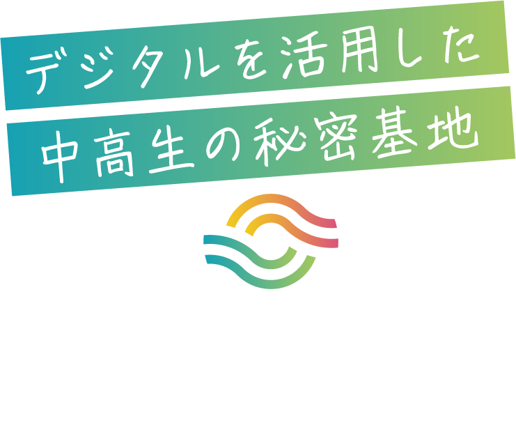

認定NPO法人CLACK
VISION：生まれ育った環境に関係なく、子どもが希望とワクワクを持てる社会
MISSION；困難を抱える中高生に、デジタルを使った伴走支援のインフラをつくる
詳細インターンシップ（個人）
インターンシップに参加させていただき、施設「よどがわベース」のLPを制作しました。

LPを見る
よどがわベース
施設「よどがわベース」にて、クルー（スタッフ）、およびクリエイター（テクニカルサポートスタッフ）として活動しています。
Tech Runway
プログラミング教室「Tech Runway」と、そのOB会「Tech Runway +」に参加し、個人用ファイル管理用Webアプリを開発しました。